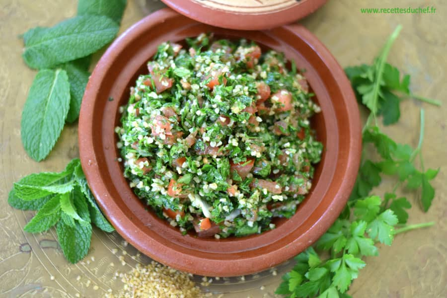

A la base, simple salade de boulghour assaisonnée au citron et à l’huile d’olive et agrémentée de quelques herbes du jardin, le taboulé s’est petit à petit enrichi d’une grande quantité de persil et de menthe, puis de tomates, pour devenir LA salade libanaise par excellence appréciée de tous et associée aux pique-niques, fêtes et réceptions. Elle reste d’une fraîcheur incomparable par grande chaleur. C’est parti pour la recette! Source
Pour 8 personnes :
- 200g de boulghour
- 1 gros bouquet de persil
- 2 oignons moyens
- 1/2 bouquet de menthe
- 5 tomates moyennes
- 2 gros citrons
- 6 C. à soupe d’huile d’olive
- 1 pincée de sel
- 1 pincée de poivre
Instructions
- Versez le boulghour dans un bol et lavez-le.
- Egouttez-le à l’aide d’une passoire fine puis laissez-le gonfler pendant une heure au frais avec un tout petit peus d’eau.
- Lavez les légumes et séchez-lez.
- Pelez les tomates, épépinez-les et coupez les en très petits dés.
- Hachez les oignons et pressez les citrons.
- Equeutez le persil et la menthe, lavez-les, séchez-les et émincez-les très finement.
- Dans un grand saladier, mélangez les légumes au bourghoul. Ajoutez le jus de citron, l’huile d’olive, le persil, la menthe, le sel et le poivre.